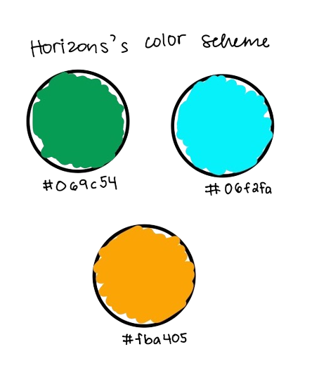
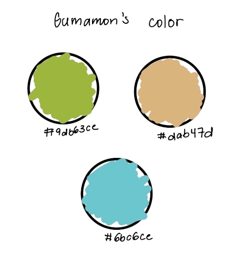

What is Horizons?
My final project will be about Horizons*, a college application mentorship organization for Guam's high school students. The organization assists with building college lists, essay proofreading, and college networking.
*I previously used Horizons for a lab assignment (Lab 5); however, I've received approval from Professor Nguyen to continue with the topic as long as I do not reuse Lab 5's code.
Who will be the audience?
This website's target audience will be high school alumni of Guam and current college applicants from Guam.
Design & Style
The website will be simple and straightforward, while supplied with colorful graphics. It will be following Horizons's current color scheme (see color palette below), and will take some color inspiration from Guam's mascot, Gumamon, for a sense of familiarity.
 The three websites that I took inspiration from are: Reel Unlimited, Circle Website, and Big Sale. I also took inspiration from Guam's official website Visit Guam.
Scope and Wireframe
The website will have five pages: "Home" page, "Services" page, "Board" page, "Members" page, and "Contact us!" page.
- The "Home" page will give a brief welcome and introduction for the audience. It will contain Horizons's mission statement, some college application advice, and examples of the mentors' schools.
- The "Services" page will give a summary of services that Horizons provides: Committed Mentorship, Building College Applications, Essay Proofreading, and College Information Sessions & Networking.
- The "Board" page will exhibit Horizons's Founder and President, Vice President, and Social Media Manager.
- The "Members" page will have the mentors' photo and their current post-secondary institution.
- The "Contact us!" page will give Horizons's contact information.
Please see the wireframe PDF below for more detail.